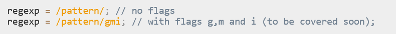
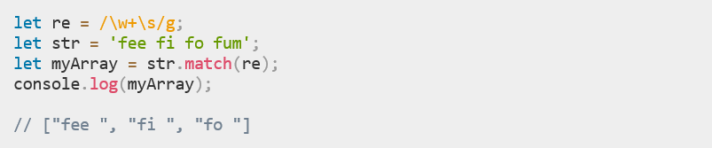
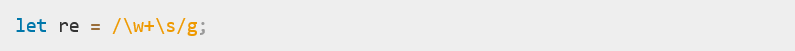
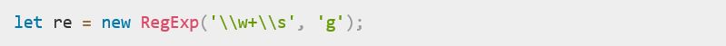

Author: Liudmila Litvin
Regular expressions originated in 1951 by mathematician Stephen Cole Kleene
The “long” syntax:
The “short” one, using slashes "/":
| Flag | Description |
| g | Global search |
| i | Case-insensitive search |
| m | Multi-line search |
| s | Enables “dotall” mode, that allows a dot . to match newline character |
| u | "unicode"; treat a pattern as a sequence of unicode code points |
| y | Perform a "sticky" search that matches starting at the current position in the target string |
Note! Flags are an integral part of a regular expression. They cannot be added or removed later.
For example:
You could replace the line:
with:
and get the same result.
| Character | Meaning |
| \ | A backslash indicates that the next character is special and is not to be interpreted literally. For example, a 'b' without a preceding '\' generally matches lowercase 'b's wherever they occur — the character will be interpreted literally. |
| $ | Matches end of input. If the multiline flag is set to true, also matches immediately before a line break character. For example, /t$/ does not match the 't' in "eater", but does match it in "eat". |
| + | Matches the preceding expression 1 or more times. Equivalent to {1,}. For example, /a+/ matches the 'a' in "candy" and all the a's in "caaaaaaandy", but nothing in "cndy". |
| \d | Matches a digit character. Equivalent to [0-9]. For example, /\d/ or /[0-9]/ matches '2' in "B2 is the suite number." |
| \D | Matches a non-digit character. Equivalent to [^0-9]. For example, /\D/ or /[^0-9]/ matches 'B' in "B2 is the suite number." |
| \w | Matches any alphanumeric character including the underscore. Equivalent to [A-Za-z0-9_]. For example, /\w/ matches 'a' in "apple," '5' in "$5.28," and '3' in "3D." |
Completed list and description of the special characters by the link:
https://developer.mozilla.org/en-US/docs/Web/JavaScript/ Guide/Regular_Expressions
For example: let re = /ab*c/;
In the string "cbbabbbbcdebc," the pattern matches the substring 'abbbbc'
If you need to use any of the special characters literally, you must escape it by putting a backslash in front of it
For example: let re = /a\*b/;
The backslash "escapes" the '*', making it literal instead of special.
| Method | Description |
| exec | A RegExp method that executes a search for a match in a string. It returns an array of information or null on a mismatch. |
| test | A RegExp method that tests for a match in a string. It returns true or false. |
| match | A String method that returns an array containing all of the matches, including capturing groups, or null if no match is found. |
| matchAll | A String method that returns an iterator containing all of the matches, including capturing groups. |
| search | A String method that tests for a match in a string. It returns the index of the match, or -1 if the search fails. |
| replace | A String method that executes a search for a match in a string, and replaces the matched substring with a replacement substring. |
| split | A String method that uses a regular expression or a fixed string to break a string into an array of substrings. |